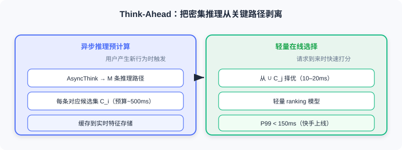

OneRec-Think 的思考框架
📝 Before You Continue: 先读完 9.1 的语义对齐——OneRec-Think 的整套推理建立在「模型已认识物品」之上。也建议回顾 5.3 的 OneRec 端到端生成，本章是它从「会生成」到「会思考」的升级。
当 PLUM 在 YouTube 上验证了协同语义与语言语义可在工业规模统一时，推荐与 LLM 的融合似乎水到渠成。但一个关键问题浮现：这些模型虽然能高效生成推荐，其推理过程仍是 隐式的黑箱——模型推荐一个视频时，我们无法知道它依据了哪些历史行为，也不清楚它如何权衡内容相似性与协同信号。更重要的是，它们无法像 ChatGPT 那样通过 Chain-of-Thought（思维链） 做显式推理——而后者正是 LLM 在复杂任务上突破的核心能力。
OneRec-Think 正是为填补这一空白而生。它不满足于让 LLM 仅仅「认识」物品，而是要让 LLM 先思考再推荐。本章我们剖析它如何让模型从「隐式预测器」变为「显式推理者」。
读完本章，你将能够：
- 描述OneRec-Think 的三阶段训练框架（物品对齐 → 推理激活 → 推理增强）
- 解释 推理脚手架如何用渐进任务「激活」模型的归纳/演绎/反事实推理
- 复述 推荐特定奖励如何应对「多有效性」挑战，以及 GRPO 的相对优势机制
- 说明Think-Ahead 架构如何把密集推理从在线关键路径剥离、满足实时延迟
- 完成 4 道分层练习题，巩固从对齐到增强的推理范式
9.2.0 从「认识物品」到「学会思考」
传统模型直接输出物品 ID，而 OneRec-Think 会先生成一段推理：
用户的观看历史主要围绕国际关系和军事动态展开，
表现出对军事装备和技术进步的强烈兴趣……
因此推荐聚焦中国军事技术进步的视频，
特别是新型 J-35 战斗机首次亮相的内容……
这种显式推理不仅提升可解释性，更重要的是 推理过程本身为决策提供了结构化思考路径 ，让模型更准确捕捉用户意图的多个层次。OneRec-Think 把 自然语言交互、显式推理生成、端到端推荐 统一在同一框架中——用户可对话表达需求，模型基于历史与上下文生成推理，最后直接生成物品语义 ID，无需预定义候选集。
🧠 Mental Model: 从「直觉型评委」到「会写批注的导师」
判别式模型像凭直觉打分的评委，给个分就完事；OneRec-Think 像一位会在卷面上写满批注的导师——先分析学生（用户）的特点，再评价每份答案（候选）的契合度，最后给出推荐并附理由。批注（推理）本身就是决策的一部分，而非事后装饰。
9.2.1 三阶段训练框架
OneRec-Think 的核心是精心设计的 三阶段训练框架 ：物品对齐（Itemic Alignment）、推理激活（Reasoning Activation）、推理增强（Reasoning Enhancement）。
物品对齐：让模型「认识」物品
OneRec-Think 继承 LC-Rec/OneRec 的语义 ID 思路，并针对短视频（内容碎片化、行为极快）做优化。它采用 分层表征融合 ：文本塔、视觉塔、音频塔、协同塔分别提取特征，再用 注意力加权 动态融合（不同视频各模态重要性差异巨大——美食靠视觉、脱口秀靠音频）：
关键创新是 Item-Textual Alignment（物品-文本对齐） ：给定不同长度 ID 前缀，生成相应粒度描述：
输入: <item_a_8121> → 输出: 这是一个街头美食类视频
输入: <item_a_8121><item_b_3259> → 输出: 繁华街头市场的美食视频,含各种小吃摊位
输入: <item_a_8121><item_b_3259><item_c_6391> → 输出: 街头市场,小贩叫卖烤串、炒饭...
这种逐层细化训练让 语义 ID 被「锚定」到 LLM 原有语言语义网络中——看到 <item_a_8121> 的神经元激活模式与看到「街头美食」高度相似，为推理激活奠定神经基础。对齐目标结合双向任务：
推理激活：用脚手架「激活」思考
完成对齐后，模型「认识」了物品，但还不会「思考」。类比人类：学生认识了所有公式，不代表会解复杂题——后者需要学会分解问题、选公式、逐步推导。推理脚手架（Reasoning Scaffolding） 扮演「思维训练」角色，分三层渐进激活：
用户画像推理（归纳）——给定历史交互序列，生成结构化兴趣总结：
主要兴趣:幽默短剧、影视解说(>60%)和轻松娱乐;次要兴趣:宠物、传统文化、地方美食
模型需从离散 ID 识别内容主题、统计占比、组织成连贯画像，训练 归纳推理。
候选评估推理（演绎）——给定用户画像与候选物品，生成匹配度推理：
候选聚焦中国军事技术进步(J-35首秀),与用户对军事装备的强烈兴趣高度相关→高度相关
训练 演绎推理 ：建立「用户兴趣→物品内容→匹配判断」的三段论链条。
端到端推理式推荐——无候选集下直接从历史生成推荐 ID 与完整推理，额外引入 反事实推理 （当用户需求与历史冲突时如何调整）与 多目标权衡 （相关性 vs 情感需求）。

训练目标为加权三层次损失 。其精髓是 渐进性——像教育学的脚手架教学法：先给明确结构支撑，待模型掌握后逐步撤去，让其独立完成。
推理增强：用强化学习精炼路径
模型能生成推理后，新挑战出现： 如何评价推理质量好坏？ 数学题答案非对即错；但推荐中同一用户可能有数十个「正确」选择（科幻、纪录片、搞笑都有效）。这种 多有效性（Multi-Validity） 是推荐区别于传统 NLP 的根本特性——若简单套用监督/强化学习，模型可能因推荐了「不在标签里但用户会喜欢」的物品而受罚，变得过度保守。
OneRec-Think 用 推荐特定奖励函数 综合四维信号：
- ：推荐与历史的协同相似度（即使不在标签中，只要协同空间近就给正奖）
- ：推荐内容与用户画像的语义匹配度
- ：推理文本与最终物品的连贯性（用 NLI 模型判，脱节要罚）
- ：真实用户反馈（完播+点赞=1.0，快速划过=-0.5）
典型权重 。基于该奖励，OneRec-Think 用 GRPO 优化：对同一用户采样 条 rollout ，计算相对优势：

💡 Key Insight: GRPO 的精妙在于——模型不需要知道「绝对正确」的推荐是什么，只需学会识别哪些推理相对更好。这特别适合多有效性场景：允许模型同时学习多种有效推理模式，而非收敛到唯一「标准答案」。
训练后涌现三行为： 推理深度自适应 （简单场景简洁、复杂场景细致）、反事实推理出现 （识别需求与历史的冲突）、推理多样性保持 （不同采样角度不同，但都导向合理推荐）。
Analysis: 推理增强的成本是引入奖励模型与 GRPO 循环，工程更复杂；收益是推理更准确、更多样、可解释。它把「多有效性」从障碍变成了优势——只要相对更好就强化。
9.2.2 Think-Ahead：把推理搬离关键路径
OneRec-Think 展现强大能力，但部署难题尖锐：短视频要求 100ms 内返回，而生成完整推理（数十到上百 token）再生成 ID，即使高性能 GPU 也需数百毫秒。
Think-Ahead 架构 的核心理念： 推理可提前在用户行为更新时异步计算，不必等请求到来才思考。 流程：
- 异步推理预计算 ：用户产生新行为时，后台触发推理引擎，生成 条推理路径（每条对应候选集 ），缓存在实时特征存储。预算可放宽到 ~500ms。
- 轻量在线选择 ：请求到来时，从预计算候选集快速打分择优，用轻量 ranking 模型（基于实时上下文）在 10–20ms 完成。
- 增量推理更新 ：新行为与已有路径一致时，仅追加简短更新；显著改变画像时才全量重算。

🧠 Mental Model: 日常决策的类比 你不会每次做决定都从头思考，而是平时积累「我喜欢什么类型的电影」这类结论，决策时快速选用。Think-Ahead 把「平时想」与「当场选」分离，既保思考深度，又满足延迟。
Think-Ahead 在快手全面上线，P99 延迟约 153ms，APP 停留时长提升 0.159%。相比同步方案： P50 延迟降 73% （320→86ms）、P99 降 68% （480→153ms）、推理质量保持率 98.5%、缓存命中率 92.3%。
💡 Key Insight: 对话场景中 OneRec-Think 还能上下文感知——用户表达负面情绪时，模型检测到情感信号，把推荐从一般兴趣转向放松积极内容。这标志着推荐从「被动响应」变「主动理解」。
OneRec-Think 的成功是范式跃迁：从「隐式预测器」到「显式推理者」。但它仍依赖 人工设计的推理模板与任务——这引出了 9.3 的自主推理范式。
⚠️ Common Mistakes in 9.2
| # | Mistake | Example | Why It's Wrong | Fix |
|---|---|---|---|---|
| 1 | 把 OneRec-Think 当纯生成模型 | 「它和 OneRec 一样只是生成 ID」 | 它先生成显式推理链再输出 ID，可解释 | 记住：推理是决策的一部分，非装饰 |
| 2 | 忽视「多有效性」直接套监督学习 | 用 0-1 标签惩罚不在标签中的好推荐 | 推荐无唯一正确答案，会逼模型保守 | 用推荐特定奖励 + GRPO 相对优势 |
| 3 | 以为 GRPO 需要绝对正确答案 | 「GRPO 要标出标准推理」 | GRPO 只比组内相对好坏，无需绝对标准 | 同用户采样 K 条 rollout 比相对优势 |
| 4 | 忘记推理的延迟代价 | 线上同步生成完整推理链 | 数百 ms 远超 100ms 实时要求 | 用 Think-Ahead 异步预计算 + 轻量选择 |
本章小结
📌 Key Takeaways
| Concept | Key Points | Why It Matters |
|---|---|---|
| 三阶段框架 | 对齐→激活→增强 | 从「认识物品」到「学会思考」再到「精进推理」 |
| 推理脚手架 | 画像(归纳)/评估(演绎)/端到端 | 渐进激活显式推理，可审查可解释 |
| 多有效性 + 奖励 | cf/sem/coh/feedback 四维 | 适配「无唯一正确答案」的推荐 |
| GRPO | 相对优势，无需绝对标准 | 允许多种有效推理模式共存 |
| Think-Ahead | 异步预计算 + 轻量在线选择 | 实时延迟下保留深度推理 |
❓ FAQ
Q1: OneRec-Think 和 5.3 的 OneRec 差在哪？
A: OneRec 直接生成会话列表（会生成但不解释）；OneRec-Think 先生成结构化推理链再输出 ID，把「思考」变成决策的一部分，可解释、可审查。
Q2: 为什么 GRPO 比「标标准答案」更适合推荐？
A: 推荐有多有效性——同一用户多个推荐都合理，没有唯一标准答案。GRPO 同用户采样多条 rollout，只比组内相对好坏，避免把「不在标签里的好推荐」误罚成坏。
Q3: Think-Ahead 牺牲了推理质量吗？
A: 几乎不——异步预计算可用更大预算（~500ms）生成更深入推理，在线只做轻量选择。实测推理质量保持率 98.5%，P99 仍 < 150ms。
🔗 前后关联
- 9.1 （语义对齐）物品对齐阶段直接建立在 9.1 的语义索引之上——模型先「认识」才能「思考」。
- 9.3 （自主推理）OneRec-Think 依赖人工模板，RecZero/RecOne 把它解放为自主探索。
- 5.3 （OneRec）本章是 OneRec 端到端生成的「会思考」升级版。
Practice Problems
Work through all problems in order — they get progressively harder. Each has a complete solution you can reveal after trying it yourself.
Problem 9.2.1 — 归类三阶段 🟢 Easy
把下列训练活动归入 OneRec-Think 三阶段（物品对齐 / 推理激活 / 推理增强）之一：
- (a) 给定 ID 前缀生成对应粒度描述
- (b) 用 GRPO 按相对奖励更新推理路径
- (c) 从用户历史生成结构化兴趣总结
- (d) 注意力加权融合多模态嵌入得到语义 ID
💡 Solution (click to reveal)
Approach: 对照三阶段职责。
- (a) 物品对齐（Item-Textual Alignment）
- (d) 物品对齐（分层表征融合）
- (c) 推理激活（用户画像推理，归纳）
- (b) 推理增强（GRPO 强化学习）
Key points:
- 对齐=认识物品；激活=学会思考；增强=精炼推理。
- 三者顺序不可颠倒。
Problem 9.2.2 — 多有效性判断 🟢 Easy
某用户历史爱看科幻电影，模型推荐了一部纪录片（用户也喜欢），但该纪录片不在训练标签（标签只记录了用户实际点击的那部喜剧）。若用标准 0-1 监督，会发生什么？GRPO 为何不会？
💡 Solution (click to reveal)
Approach: 用「多有效性」框架分析。
标准监督： 纪录片不在标签中 → 被当作「错误」惩罚 → 模型变保守，不敢推荐训练集外的合理内容。
GRPO： 同一用户采样多条 rollout，比 组内相对 奖励。若纪录片 rollout 的奖励（cf/sem/feedback 综合）高于组平均，相对优势为正，被 强化——它不在乎是否「在标签里」，只在乎相对更好。
Key points:
- 多有效性 = 多个合理推荐并存。
- GRPO 用相对优势绕开「无绝对标准」困境。
Problem 9.2.3 — GRPO 相对优势计算 🟡 Medium
对某一用户采样 4 条推理 rollout，奖励分别为 。请计算组平均与每条的相对优势 ，并指出应增强/抑制哪些。
💡 Solution (click to reveal)
Approach: 先算均值，再逐条减。
组平均：
增强 ：rollout 1、3（相对优势为正）； 抑制 ：rollout 2、4（为负）。
Key points:
- 绝对高低不重要，相对组平均才重要。
- GRPO 同时保留多种有效推理（1 与 3 角度可能不同）。
Problem 9.2.4 — 设计 Think-Ahead 部署 🔴 Hard
你在设计短视频推荐的 Think-Ahead 架构。请写出异步预计算、在线选择、增量更新三环节各自「输入/输出/延迟预算」，并说明缓存命中率 92.3% 意味着什么工程收益。
💡 Solution (click to reveal)
Approach: 按三环节拆解。
- 异步预计算 ：输入=用户新行为后的历史 ；输出= 条推理路径 + 对应候选集 ；预算~500ms（后台，不阻塞请求）。
- 在线选择 ：输入=预计算候选并集 + 实时上下文；输出=最终推荐 ID；预算 10–20ms（轻量 ranking）。
- 增量更新 ：输入=新行为；输出=追加更新或全量重算；仅在画像显著变化时全量重算。
命中率 92.3% 的收益： 绝大多数请求直接用已缓存的推理候选，无需触发全量重算，既省算力又保 P99 < 150ms——把「深度思考」的成本摊到异步空闲时段。
Key points:
- 关键思路：把密集推理移出关键路径。
- 命中率高 = 在线几乎只做轻量选择。
🏆 Challenge: 推理忠实性论证
OneRec-Think 的推理是「先生成」再推荐，存在推理可能为「事后合理化」的风险。请写一段 200 字内，说明你会用哪两类证据（结合本章提到的束搜索一致性 / 交错推理）来验证推理 确实指导 了推荐，而非装饰。
💡 Hint
证据一： 束搜索一致性——对中间推理步骤施加束搜索，若推理文本与最终物品保持强对齐（而非发散），说明推理真在指导生成。证据二： ID-文本交错推理——若物品 token 的内容锚定能稳定约束文本因果阐述的方向，且替换锚定会改变推荐，则证明推理链与生成相互耦合，而非独立事后生成。呼应原文「推理过程真正指导推荐生成，而非事后合理化」。